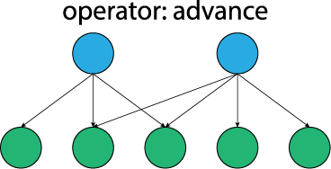
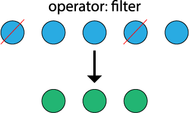
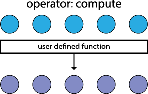

Gunrock: GPU Graph Analytics
Gunrock is a CUDA library for graph-processing designed specifically for the GPU. It uses a high-level, bulk-synchronous, data-centric abstraction focused on operations on a vertex or edge frontier. Gunrock achieves a balance between performance and expressiveness by coupling high performance GPU computing primitives and optimization strategies with a high-level programming model that allows programmers to quickly develop new graph primitives with small code size and minimal GPU programming knowledge. For more details, see Gunrock's Overview.
| Service | System | Environment | Status |
|---|---|---|---|
| Jenkins | Ubuntu 18.04.2 LTS | CUDA 10.1, NVIDIA Driver 418.39, GCC/G++ 7.3 |
Quick Start Guide
Before building Gunrock make sure you have CUDA 7.5 or higher (recommended CUDA 9 or higher) installed on your Linux system. We also support building Gunrock on docker images using the provided docker files under docker subdirectory. For complete build guide, see Building Gunrock.
git clone --recursive https://github.com/gunrock/gunrock/
cd gunrock
mkdir build && cd build
cmake .. && make -j$(nproc)
make test
Getting Started with Gunrock
- To learn more about Gunrock and its programming model, see Gunrock's Overview.
- For information on building Gunrock, see Building Gunrock.
- Tutorial: How to write a graph primitive within Gunrock?
- Comprehensive list of test applications and primitives for most the functionality of Gunrock.
- API Reference documentation (generated using doxygen).
- Find our publications, presentations, and results and analysis.
Copyright and License
Gunrock is copyright The Regents of the University of California, 2013–2019. The library, examples, and all source code are released under Apache 2.0.
Overview
What is Gunrock?
Gunrock is a stable, powerful, and forward-looking substrate for GPU-based graph-centric research and development. Like many graph frameworks, it leverages a bulk-synchronous programming model and targets iterative convergent graph computations. We believe that today Gunrock offers both the best performance on GPU graph analytics as well as the widest range of primitives.
Who may use Gunrock?
External Interface Users: Users interested in leveraging the external C, C++ and/or Python interfaces to call high-performant applications and primitives (such as Breadth First Search, Connected Components, PageRank, Single Source Shortest Path, etc.) within Gunrock to perform graph analytics.
Application Developers: Uses interested in developing applications, primitives and/or low level operators for Gunrock.
Graph Analytics Library Developers: (CUDA and/or other languages -- for more backends, etc.)
Why use Gunrock?
Gunrock has the best performance of any programmable GPU+graph library. Gunrock primitives are an order of magnitude faster than (CPU-based) Boost, outperform any other programmable GPU-based system, and are comparable in performance to hardwired GPU graph primitive implementations. When compared to Ligra, a best-of-breed CPU system, Gunrock currently matches or exceeds Ligra's 2-CPU performance with only one GPU.
Gunrock's abstraction separates its programming model from the low-level implementation details required to make a GPU implementation run fast. Most importantly, Gunrock features very powerful load-balancing capabilities that effectively address the inherent irregularity in graphs, which is a problem we must address in all graph analytics. We have spent significant effort developing and optimizing these features---when we beat hardwired analytics, the reason is load balancing---and because they are beneath the level of the programming model, improving them makes all graph analytics run faster without needing to expose them to programmers.
Gunrock's data-centric programming model is targeted at GPUs and offers advantages over other programming models. Gunrock is written in a higher-level abstraction than hardwired implementations, leveraging reuse of its fundamental operations across different graph primitives. Gunrock has a bulk-synchronous programming model that operates on a frontier of vertices or edges; unlike other GPU-based graph analytic programming models, Gunrock focuses not on sequencing computation but instead on sequencing operations on frontier data structures. This model has two main operations: compute, which performs a computation on every element in the current frontier, and traversal, which generates a new frontier from the current frontier. Traversal operations include advance (the new frontier is based on the neighbors of the current frontier) and filter (the new frontier is a programmable subset of the current frontier). We are also developing new Gunrock operations on frontier data structures, including neighbor, gather-reduce, and global operations.
This programming model is a better fit to high-performance GPU implementations than traditional programming models adapted from CPUs. Specifically, traditional models like gather-apply-scatter (GAS) map to a suboptimal set of GPU kernels that do a poor job of capturing producer-consumer locality. With Gunrock, we can easily integrate compute steps within the same kernels as traversal steps. As well, Gunrock's frontier-centric programming model is a better match for key optimizations such as push-pull direction-optimal search or priority queues, which to date have not been implemented in other GPU frameworks, where they fit poorly into the abstraction.
Gunrock supports more primitives than any other programmable GPU+graph library. We currently support a wide variety of graph primitives, including traversal-based (breadth-first search, single-source shortest path); node-ranking (HITS, SALSA, PageRank); and global (connected component, minimum spanning tree). Many more algorithms are under active development, see Gunrock Applications.
Gunrock has better scalability with multiple GPUs on a node than any other graph library. We not only show better BFS performance on a single node than any other GPU framework but also outperform other frameworks, even those customized to BFS, with up to four times as many GPUs. More importantly, our framework supports all Gunrock graph primitives rather than being customized to only one primitive.
Gunrock's programming model scales to multiple GPUs while still using the same code as a single-GPU primitive. Other frameworks require rewriting their primitives when moving from one to many GPUs. Gunrock's multi-GPU programming model uses single-node Gunrock code at its core so that single-GPU and multi-GPU operations can share the same codebase.
Programming Model
This page describes the programming model we use in Gunrock.
Gunrock targets graph computations that are generally expressed as "iterative convergent processes". By "iterative," we mean operations that may require running a series of steps repeatedly; by "convergent," we mean that these iterations allow us to approach the correct answer and terminate when that answer is reached. Many graph-computation programming models target a similar goal.
Many of these programming models focus on sequencing steps of computation. Gunrock differs from these programming models in its focus on manipulating a data structure. We call this data structure a frontier of vertices or edges. The frontier represents the subset of vertices or edges that is actively participating in the computation. Gunrock operators input one or more frontiers and output one or more frontiers.
Generically, graph operations can often be expressed via a push abstraction (graph elements "push" local private updates into a shared state) or a pull abstraction (graph elements "pull" updates into their local private state) (Besta et al. publication on push-vs.-pull, HPDC '17). Gunrock's programming model supports both of these abstractions. (For instance, Gunrock's direction-optimized Breadth-First Search (BFS) and PageRank (PR) supports both push and pull BFS phases. Mini-Gunrock supports pull-based BFS and PR.) Push-based approaches may or may not require synchronization (such as atomics) for correct operation; this depends on the primitive. Gunrock's idempotence optimization (within its BFS implementation) is an example of a push-based primitive that does not require atomics.
Operators
In the current Gunrock release, we support five operators.
- Advance: An advance operator generates a new frontier from the current frontier by visiting the neighbors of the current frontier. A frontier can consist of either vertices or edges, and an advance step can input and output either kind of frontier. Advance is an irregularly-parallel operation for two reasons: 1)~different vertices in a graph have different numbers of neighbors and 2)~vertices share neighbors. Thus a vertex in an input frontier map to multiple output items. An efficient advance is the most significant challenge of a GPU implementation.

- Filter: A filter operator generates a new frontier from the current frontier by choosing a subset of the current frontier based on programmer-specified criteria. Each input item maps to zero or one output items.

- Compute: A compute operator defines an operation on all elements (vertices or edges) in its input frontier. Gunrock implements a compute operator using
ForAll()andForEach()parallel loops. However, a programmer-specified operation can also be implemented using C++ lambda functions within the traversal operators such as advance or filter. Gunrock performs these operation in parallel across all elements without regard to order.

Segmented intersection: A segmented intersection operator takes two input node frontiers with the same length, or an input edge frontier, and generates both the number of total intersections and the intersected node IDs as the new frontier.
Neighbor-Reduce: A neighbor-reduce operator uses the advance operator to visit the neighbor list of each item in the input frontier and performs a segmented reduction over the neighborhood (neighbor list) generated via the advance.
Gunrock's Application Cases
The following is are a wide variety of graph primitives, including traversal-based (breadth-first search, single-source shortest path); node-ranking (HITS, SALSA, PageRank); and global (connected component, minimum spanning tree) implemented within Gunrock.
The "Directory" column in the table below shows, which subdirectory within gunrock/app and examples these applications' implementations are. The version number in the "Single GPU" and "Multi-GPU" columns show which API abstraction of gunrock supports the respective application. If you are interested in helping us port an application in the older abstraction (v0.5.x) to a newer, much cleaner abstraction (v1.x.x), please see our Porting Guide.
| Application | Directory | Single GPU | Multi-GPU |
|---|---|---|---|
| A* Search | astar | v0.5.x | |
| Betweenness Centrality | bc | v1.x.x | v0.5.x |
| Breadth-First Search | bfs | v1.x.x | v1.x.x |
| Connected Components | cc | v1.x.x | v0.5.x |
| Graph Coloring | color | v1.x.x | |
| Geolocation | geo | v1.x.x | |
| RMAT Graph Generator | grmat | v0.5.x | |
| Graph Trend Filtering | gtf | v1.x.x | |
| Hyperlink-Induced Topic Search | hits | v1.x.x | |
| K-Nearest Neighbors | knn | v1.x.x | |
| Louvain Modularity | louvain | v1.x.x | |
| Label Propagation | lp | v0.5.x | |
| MaxFlow | mf | v1.x.x | |
| Minimum Spanning Tree | mst | v0.5.x | |
| PageRank | pr | v1.x.x | v0.5.x |
| Local Graph Clustering | pr_nibble | v1.x.x | |
| Graph Projections | proj | v1.x.x | |
| Random Walk | rw | v1.x.x | |
| GraphSAGE | sage | v1.x.x | |
| Stochastic Approach for Link-Structure Analysis | salsa | v0.5.x | |
| Subgraph Matching | sm | v1.x.x | |
| Shared Nearest Neighbors | snn | v1.x.x | |
| Scan Statistics | ss | v1.x.x | |
| Single Source Shortest Path | sssp | v1.x.x | v0.5.x |
| Triangle Counting | tc | v1.x.x | |
| Top K | topk | v0.5.x | |
| Vertex Nomination | vn | v1.x.x | |
| Who To Follow | wtf | v0.5.x |
Building Gunrock
Gunrock's current release has been tested on Ubuntu 16.04 and 18.04 with CUDA 9+, compute architecture 3.0+ and g++ 4.8+. We expect Gunrock to build and run correctly on other 64-bit and 32-bit Linux distributions, and Mac OSX. We have an active issue investigating problems related to building Gunrock on Windows.
Installation
Prerequisites
Required Dependencies:
GCC & G++
CUDA (7.5 or higher) is used to implement Gunrock. Recommended CUDA version is CUDA 9 or higher, with some features such as Cooperative Groups and CUDA graphs only available in CUDA 10 or higher.
- Refer to NVIDIA's CUDA homepage to download and install CUDA.
- Refer to NVIDIA CUDA C Programming Guide for detailed information and examples on programming CUDA.
ModernGPU, CUB and RapidJSON used as external submodules for Gunrock's APIs.
- You will need to download or clone ModernGPU, CUB and RapidJSON, and place them to
gunrock/externals - Alternatively, you can clone gunrock recursively with
git clone --recursive https://github.com/gunrock/gunrock - or if you already cloned gunrock, under
gunrock/directory: rungit submodule initandgit submodule update
- You will need to download or clone ModernGPU, CUB and RapidJSON, and place them to
Optional Dependencies:
lcov
googletest
Boost (version 1.58) is used for for the CPU reference implementations of Connected Component, Betweenness Centrality, PageRank, Single-Source Shortest Path, and Minimum Spanning Tree.
- Refer to Boost Getting Started Guide to install the required Boost libraries.
METIS is used as one possible partitioner to partition graphs for multi-gpu primitives implementations.
- Refer to METIS Installation Guide. If the build cannot find your METIS library, please set the
METIS_DLLenvironment variable to the full path of the library.
- Refer to METIS Installation Guide. If the build cannot find your METIS library, please set the
doxygen
Compilation
Simple Gunrock Compilation:
Downloading gunrock
# Using git (recursively) download gunrock
git clone --recursive https://github.com/gunrock/gunrock
# Using wget to download gunrock
wget --no-check-certificate https://github.com/gunrock/gunrock/archive/master.zip
Compiling gunrock
cd gunrock
mkdir build && cd build
cmake ..
make
- Binary test files are available in
build/bindirectory. - You can either run the test for all primitives by typing
make checkorctestin the build directory, or do your own testings manually. - Detailed test log from
ctestcan be found in/build/Testing/Temporary/LastTest.log, alternatively you can run tests with verbose option enabledctest -v.
Advance Gunrock Compilation:
You can also compile gunrock with more specific/advanced settings using cmake -D[OPTION]=ON/OFF. Following options are available:
- GUNROCK_BUILD_LIB (default: ON) - Builds main gunrock library.
- GUNROCK_BUILD_SHARED_LIBS (default: ON) - Turn off to build for static libraries.
- GUNROCK_BUILD_TESTS (default: ON) - Builds Gunrock applications and enables the
ctestframework for single GPU implementations. - GUNROCK_MGPU_TESTS (default: OFF) - If on, tests multiple GPU primitives with
ctest. - GUNROCK_GENCODE_SM<> (default: GUNROCK_GENCODE_SM70=ON) change to generate code for a different compute capability.
- CUDA_VERBOSE_PTXAS (default: OFF) - ON to enable verbose output from the PTXAS assembler.
- GUNROCK_GOOGLE_TESTS (default: OFF) - ON to build unit tests using googletest.
- GUNROCK_CODE_COVERAGE (default: OFF) - ON to run code coverage on Gunrock's source code. Requires
lcovto be installed on the system. - GUNROCK_BUILD_APPLICATIONS (default: ON) - Set off to only build one of the following primitive (GUNROCK_APP_* must be set on to build if this option is turned off.) Example for compiling gunrock with only Breadth First Search (BFS) primitive, and list of some of the other applications that can be compiled using
cmake(note: for the full list, see theCMakeLists.txtfile).
mkdir build && cd build
cmake -DGUNROCK_BUILD_APPLICATIONS=OFF -DGUNROCK_APP_BFS=ON ..
make
- GUNROCK_APP_BC (default: OFF)
- GUNROCK_APP_BFS (default: OFF)
- GUNROCK_APP_CC (default: OFF)
- GUNROCK_APP_PR (default: OFF)
- GUNROCK_APP_SSSP (default: OFF)
- GUNROCK_APP_DOBFS (default: OFF)
- GUNROCK_APP_HITS (default: OFF)
- GUNROCK_APP_SALSA (default: OFF)
- GUNROCK_APP_MST (default: OFF)
- GUNROCK_APP_WTF (default: OFF)
- GUNROCK_APP_TOPK (default: OFF)
Generating Datasets
All dataset-related code is under the dataset subdirectory. The current version of Gunrock only supports Matrix-market coordinate-formatted graph format. The datasets are divided into two categories according to their scale. Under the dataset/small/ subdirectory, there are trivial graph datasets for testing the correctness of the graph primitives. All of them are ready to use. Under the dataset/large/ subdirectory, there are large graph datasets for doing performance regression tests.
* To download them to your local machine, just type make in the dataset/large/ subdirectory.
* You can also choose to only download one specific dataset to your local machine by stepping into the subdirectory of that dataset and typing make inside that subdirectory.
Hardware
Laboratory Tested Hardware: Gunrock with GTX 970, Tesla K40s, GTX 1080, Tesla P100, RTX 2070, Tesla V100 and other NVIDIA cards. We have not encountered any trouble in-house with devices with CUDA capability >= 3.0.
Methodology
Methodology for Graph Analytics Performance
We welcome comments from others on the methodology that we use for measuring Gunrock's performance.
Currently, Gunrock is a library that requires no preprocessing. By this we mean that Gunrock inputs graphs in a "standard" format, e.g., compressed sparse row or coordinate, such as those available on common graph repositories (SNAP or SuiteSparse (UF)). In our experiments, we use MatrixMarket format.
Other graph libraries may benefit from preprocessing of input datasets. We would regard any manipulation of the input dataset (e.g., reordering the input or more sophisticated preprocessing such as graph coloring or CuSha's G-Shards) to be preprocessing. We think preprocessing is an interesting future direction for Gunrock, but have not yet investigated it. We hope that any graph libraries that do preprocessing report results with both preprocessed and unmodified input datasets.
(That being said, we do standardize input graphs in two ways: before running our experiments, we remove self-loops/duplicated edges. If the undirected flag is set, we convert the input graph to undirected. When we do so, that implies one edge in each direction, and we report edges for that graph accordingly. What we do here appears to be standard practice.)
In general, we try to report results in two ways:
- Throughput, measured in edges traversed per second (TEPS). We generally use millions of TEPS (MTEPS) as our figure of merit.
- Runtime, typically measured in ms. We measure runtime entirely on the GPU, with the expectation that the input data is already on the GPU and the output data will be stored on the GPU. This ignores transfer times (either disk to CPU or CPU to GPU), which are independent of the graph analytics system. It is our expectation that GPU graph analytics will be most effective when (a) they are run on complex primitives and/or (b) run on sequences of primitives, either of which would mitigate transfer times. GPU graph analytics are likely not well suited to running one single simple primitive; for a simple primitive like BFS, it is more expensive to transfer the graph from CPU to GPU than it is to complete the BFS.
To calculate TEPS, we require the number of edges traversed (touched), which we count dynamically. For traversal primitives, we note that non-connected components will not be visited, so the number of visited edges may be fewer than the number of edges in the graph. We note that precisely counting edges during the execution of a particular primitive may have performance implications, so we may approximate (see BFS).
Notes on some of the Gunrock primitives follow.
Breadth-First Search (BFS)
When we count the number of edges traversed, we do so by summing the number of outbound edges for each visited vertex. For forward, non-idempotent BFS, this strategy should give us an exact count, since this strategy visits every edge incident to a visited vertex. When we enable idempotence, we may visit a node more than once and hence may visit an edge more than once. For backward (pull) BFS, when we visit a vertex, we count all edges incoming to that vertex even if we find a visited predecessor before traversing all edges (and terminate early). (To do so otherwise has performance implications.) Enterprise uses the same counting strategy.
If a comparison library does not measure MTEPS for BFS, we compute it by the number of edges visited divided by runtime; if the former is not available, we use Gunrock's edges-visited count.
Single Source Shortest Path (SSSP)
In general we find MTEPS comparisons between different approaches to SSSP not meaningful: because an edge may be visited one or many times, there is no standard way to count edges traversed. Different algorithms may not only visit a very different number of edges (Dijkstra vs. Bellman-Ford will have very different edge visit counts) but may also have a different number of edges visited across different invocations of the same primitive.
When we report Gunrock's SSSP MTEPS, we use the number of edges queued as the edge-traversal count.
To have a meaningful SSSP experiment, it is critical to have varying edge weights. SSSP measured on uniform edge weights is not meaningful (it becomes BFS). In our experiments, we set edge weights randomly/uniformly between 1 and 64.
Betweenness Centrality (BC)
If a comparison library does not measure MTEPS for BC, we compute it by twice the number of edges visited in the forward phase divided by runtime (the same computation we use for Gunrock).
PageRank (PR)
We measure PageRank elapsed time on one iteration of PageRank. (Many other engines measure results this way and it is difficult to extrapolate from this measurement to runtime of the entire algorithm.)
Results and Analysis
We are gradually adding summaries of our results to these web pages (please let us know if you would like other comparisons). These summaries also include a table of results along with links to the configuration and results of each individual run. We detail our methodology for our measurements here.
- Gunrock performance compared with other engines for graph analytics
- Setting parameters for direction-optimized BFS
- Gunrock results on different GPUs
- Gunrock BFS throughput as a function of frontier size
- Multi-GPU Gunrock Speedups and Multi-GPU Gunrock Scalability
- Multi-GPU Gunrock Partition Performance
- Comparison to Groute
For reproducibility, we maintain Gunrock configurations and results in our github gunrock/io repository.
We are happy to run experiments with other engines, particularly if those engines output results in our JSON format / a format that can be easily parsed into JSON format.
Preliminary Performance Results
The following are some preliminary performance results. It is meant to give a rough idea of how Gunrock performs with specific version, testing environment, parameters and datasets. The numbers may change (with very high chances in reality), throughout the development of the library, and / or with different environments, running parameters and datasets. If more accurate numbers (e.g. for comparison in a paper), or results with different parameters / datasets, please contact the developers of Gunrock.
General remarks
- All timings are shown in Millisecond (ms).
Abbreviation:
- CSR = compressed sparse row
- CSC = compressed sparse column
- D = directed
- UD = undirected
- SOC = social graph
- MTEPS = million traversed edges per second
- MTVPS = million traversed vertices per second
- V = vertex
- E = edge
- H = hardware
- S = software
- G = Gunrock
- P = parameter
Load time includes graph generation (for synthetic graphs) or raw data reading (for real graphs) + format conversion (to CSR and / or CSC, to UD, when necessary) time
Preprocess time includes memory allocation, graph partition (for multiple GPU) and initial data transmission (CPU -> GPU) time
Process time is the actual algorithm running time on GPU
Postprocess time includes resulted data transmission (GPU -> CPU), verification and clean-up time
The total time of our results are dominated by load / write time (our server is not optimized for data load / write performance). The processing time may be a better indicator of performance.
Breadth-First Search (BFS)
| No. | Dataset | graph type | V | E | root vertex | iteration | process time | MTEPS | MTVPS | load time | preprocess time | postprocess time | write time | total time | condition |
|---|---|---|---|---|---|---|---|---|---|---|---|---|---|---|---|
| 1 | friendster_edges_small_2hop | SOC, CSR, D | 121,674,532 | 20,509 | 3,546,566 | 6 | 17.2760 | 1.1871 | 0.4893 | 12,590.6990 | 17,114.5179 | 112.5512 | 31,016.4499 | H1 + S1 + G1 + P1 | |
| 2 | friendster_edges_gte_1M | SOC, CSR, D | 124,836,417 | 8,361,851 | 27,345,193 | 10 | 30.0791 | 227.9951 | 101.5078 | 12,519.1791 | 17,790.8509 | 2,787.5559 | 34,283.0300 | H1 + S1 + G1 + P1 | |
| 3 | friendster_edges_gte_10M | SOC, CSR, D | 124,836,417 | 1,342,099,766 | 71,768,986 | 12 | 1,442.8939 | 930.1573 | 68.5219 | 12,633.6250 | 103,272.5029 | 42,752.1100 | 161,598.9239 | H1 + S1 + G1 + P1 | |
| 4 | com_friendster | SOC, CSR, D | 124,836,419 | 1,806,067,135 | 7,688,909 | 31 | 1,425.3568 | 1267.0983 | 108.0366 | 16,707.1941 | 145,548.2471 | 65,636.1299 | 231,047.3258 | H1 + S1 + G1 + P1 | |
| 5 | com_LiveJournal | SOC, CSR, D | 4,036,537 | 34,681,189 | 9,766 | 17 | 49.9380 | 694.4850 | 191.7421 | 12,260.1349 | 1,461.0670 | 12,260.1349 | 18,522.2769 | H1 + S1 + G1 + P1 |
Parameters
- P1 = --traversal-mode=0 --device=0,1,2,3 --src=largestdegree --mark-pred --quick --output_filename=some_valid_filename
Remarks
- Idempotence is disabled when --mark-pred (mark predecessors) is used.
Page Rank (PR)
| No. | Dataset | graph type | V | E | iteration | process time | MTEPS | MTVPS | load time | preprocess time | postprocess time | write time | total time | condition |
|---|---|---|---|---|---|---|---|---|---|---|---|---|---|---|
| 1 | friendster_edges_small_2hop | SOC, CSR, D | 121,674,532 | 20,509 | 18 | 5,287.1938 | 0.0698 | 414.2352 | 10,758.1401 | 241.4210 | 235,052.1171 | 251,862.2911 | H2 + S1 + G1 + P1 | |
| 2 | friendster_edges_gte_1M | SOC, CSR, D | 124,836,417 | 8,361,851 | 41 | 13,322.2578 | 25.7340 | 384.1911 | 10,514.4429 | 156.9688 | 245,985.4951 | 270,482.5490 | H2 + S1 + G1 + P1 | |
| 3 | friendster_edges_gte_10M | SOC, CSR, D | 124,836,417 | 1,342,099,766 | 78 | 173,413.8281 | 603.6646 | 56.1503 | 13,701.0510 | 2,358.1159 | 222,023.1612 | 412,033.6931 | H2 + S1 + G1 + P1 | |
| 4 | com_friendster | SOC, CSR, D | 124,836,419 | 1,806,067,135 | 100 | 308,233.7812 | 585.9407 | 40.5005 | 14,585.0809 | 3,117.2709 | 240,381.1152 | 567,139.1692 | H2 + S1 + G1 + P1 | |
| 5 | com_LiveJournal | SOC, CSR, D | 4,036,537 | 34,681,189 | 23 | 2,333.8479 | 341.7821 | 369.7800 | 8,339.2031 | 100.7540 | 7,719.7220 | 18,512.9559 | H2 + S1 + G1 + P1 |
Parameters
- P1 = --traversal-mode=1 --device=2 --quick --delta=0.85 --error=0.001 --max-iter=100 --normalized --queue-sizing=1 --queue-sizing1=0
Remarks
- PR has two formulations, and Gunrock has both implemented. The unnormalized one is the one described by the original PR paper; it does not converge and can be called by not passing --normalized to the Gunrock executable. The normalized one is the one that actually converge, and can be called by passing --normalized to the Gunrock executable.
- No special treatment is used for 0-out degree vertices, and we use a directed graph, so ranks can escape from those vertices. There is a way to solve this by distributing the rank of those vertices to all vertices. This should make the total rank always equal to 1 (when using the normalized formula), but we have not implemented this yet.
Hardware
- H1 = 4 x NVIDIA Tesla K40c, 2 x Intel Xeon E5-2637 v2, 256 GB DDR3 RAM with ECC
- H2 = 1 x NVIDIA Telsa K40c, 2 x Intel Xeon E5-2637 v2, 256 GB DDR3 RAM with ECC
Software
- S1 = ubuntu 14.04.3 LTS (GNU/Linux 3.13.0-62-generic x86_64), NVIDIA GPU driver 352.30, CUDA 7.5, gcc 4.8.4
Gunrock version
G1 = dev, bc761f0c78ac855e33587c4be55e2cf672013de5, 2015.12.31
Publications
Muhammad Osama, Minh Truong, Carl Yang, Aydin Buluç and John D. Owens. Graph Coloring on the GPU. In Proceedings of the 33rd IEEE International Parallel and Distributed Processing Symposium Workshops, IPDPSW '19, pages 231–240, May 2019. [DOI | http]
Yuechao Pan, Roger Pearce, and John D. Owens. Scalable Breadth-First Search on a GPU Cluster. In Proceedings of the 31st IEEE International Parallel and Distributed Processing Symposium, IPDPS 2018, May 2018. [http]
Yangzihao Wang, Yuechao Pan, Andrew Davidson, Yuduo Wu, Carl Yang, Leyuan Wang, Muhammad Osama, Chenshan Yuan, Weitang Liu, Andy T. Riffel, and John D. Owens. Gunrock: GPU Graph Analytics. ACM Transactions on Parallel Computing, 4(1):3:1–3:49, August 2017. [DOI | http]
Yuechao Pan, Yangzihao Wang, Yuduo Wu, Carl Yang, and John D. Owens. Multi-GPU Graph Analytics. In Proceedings of the 31st IEEE International Parallel and Distributed Processing Symposium, IPDPS 2017, pages 479–490, May/June 2017. [DOI | http]
Yangzihao Wang, Sean Baxter, and John D. Owens. Mini-Gunrock: A Lightweight Graph Analytics Framework on the GPU. In Graph Algorithms Building Blocks, GABB 2017, pages 616–626, May 2017. [DOI | http]
Leyuan Wang, Yangzihao Wang, Carl Yang, and John D. Owens. A Comparative Study on Exact Triangle Counting Algorithms on the GPU. In Proceedings of the 1st High Performance Graph Processing Workshop, HPGP '16, pages 1–8, May 2016. [DOI | http]
Yangzihao Wang, Andrew Davidson, Yuechao Pan, Yuduo Wu, Andy Riffel, and John D. Owens. Gunrock: A High-Performance Graph Processing Library on the GPU. In Proceedings of the 21st ACM SIGPLAN Symposium on Principles and Practice of Parallel Programming, PPoPP '16, pages 11:1–11:12, March 2016. Distinguished Paper. [DOI | http]
Yuduo Wu, Yangzihao Wang, Yuechao Pan, Carl Yang, and John D. Owens. Performance Characterization for High-Level Programming Models for GPU Graph Analytics. In IEEE International Symposium on Workload Characterization, IISWC-2015, pages 66–75, October 2015. Best Paper finalist. [DOI | http]
Carl Yang, Yangzihao Wang, and John D. Owens. Fast Sparse Matrix and Sparse Vector Multiplication Algorithm on the GPU. In Graph Algorithms Building Blocks, GABB 2015, pages 841–847, May 2015. [DOI | http]
Afton Geil, Yangzihao Wang, and John D. Owens. WTF, GPU! Computing Twitter's Who-To-Follow on the GPU. In Proceedings of the Second ACM Conference on Online Social Networks, COSN '14, pages 63–68, October 2014. [DOI | http]
Presentations
GrAPL 2019, Graph Coloring on the GPU, May 2019. [slides]
GTC 2018, Latest Development of the Gunrock Graph Processing Library on GPUs, March 2018. [slides | video]
GTC 2018, Writing Graph Primitives with Gunrock, March 2018. [slides | video]
GTC 2016, Gunrock: A Fast and Programmable Multi-GPU Graph Processing Library, April 2016. [slides]
NVIDIA webinar, April 2016. [slides]
GPU Technology Theater at SC15, Gunrock: A Fast and Programmable Multi-GPU Graph processing Library, November 2015. [slides | video]
GTC 2014, High-Performance Graph Primitives on the GPU: design and Implementation of Gunrock, March 2014. [slides | video]
Road Map
Framework: We are exploring more operators such as neighborhood reduction and segmented intersection. Generally we want to find the right set of operators that can abstract most graph primitives while delivering high performance.
API: We would like to make an API refactoring to simplify parameter passing and to isolate parts of the library that dependencies are not necessary. The target is to make the frontier concept more clear, and to promote code reuse.
Primitives: Our near-term goal is to graduate several primitives in dev branch including A* search, weighted label propagation, subgraph matching, triangle counting, and clustering coefficients; implement maximal independent set, max flow, and graph coloring algorithms, build better support for bipartite graph algorithms, and explore community detection algorithms. Our long term goals include algorithms on dynamic graphs, multi-level priority queue support, graph partitioning, and more flexible and scalable multi-GPU algorithms.
Possible Gunrock projects
Possible projects are in two categories: infrastructure projects that make Gunrock better but have minimal research value, and research projects that are longer-term and hopefully have research implications of use to the community.
For any discussion on these, please use the existing Github issue (or make one).
Infrastructure projects
- Containerize Gunrock (a Docker container) [issue]
- Support a Windows build [issue]
- Develop a procedure to go from "How does Gunrock do on dataset X" to actually getting results and the right command lines for dataset X. Right now we do this manually with lots of iterations every time. We can automate and document this much better.
- Many apps have minimal documentation; we need better text when a user runs
./bin/primitive --help.
Research projects
- Better defaults and/or decision procedures for setting Gunrock parameters (possibly a machine-learning approach for this)
- How can we preprocess Gunrock input to increase performance? This could be either reordering CSR for better performance (e.g., reverse Cuthill-McKee) or a new format. Note When is Graph Reordering an Optimization? Studying the Effect of Lightweight Graph Reordering Across Applications and Input Graphs.
- If we had a larger number of X in the hardware—e.g., more registers, more SMs, more threads/SM, more shared memory, bigger cache---how would it help performance? (Where would we want NVIDIA to spend more transistors to best help our performance?)
- How much locality is there in frontiers with respect to the "active" frontier vs. the entire set of vertices? Interesting visualization project, for instance: Get a list of the active vertices in a frontier as a function of iteration, so iteration 0 is vertex set A, iteration 1 is vertex set B, etc. For one iteration, visualize the vertex set as a color per chunk of vertices, say, 1024 vertices per pixel. If all 1024 vertices are part of that frontier, the pixel is white, if 0 black, and gray in between. Then each iteration makes another row of pixels. This shows three things: (a) how many vertices are in the frontier compared to not; (b) how much spatial locality there is; (c) how the frontier evolves over time. One of the goals of this effort would be to determine how useful it would be to do some reordering of vertices either statically or dynamically, and either locally (within a chunk of vertices) or globally.
Gunrock Developers
- Yangzihao Wang, University of California, Davis
- Yuechao Pan, University of California, Davis
- Yuduo Wu, University of California, Davis
- Carl Yang, University of California, Davis
- Leyuan Wang, University of California, Davis
- Weitang Liu, University of California, Davis
- Muhammad Osama, University of California, Davis
- Chenshan Shari Yuan, University of California, Davis
- Andy Riffel, University of California, Davis
- Huan Zhang, University of California, Davis
- John Owens, University of California, Davis
Frequently Asked Questions
Some of the most common questions we have come across during the life of Gunrock project. If your question isn't already answered below, feel free to create an issue on GitHub.
What does it do?
Gunrock is a fast and efficient graph processing library on the GPU that provides a set of graph algorithms used in big data analytics and visualization with high performance. It also provides a set of operators which abstract the general operations in graph processing for other developers to build high-performance graph algorithm prototypes with minimum programming effort.
How does it do it?
Gunrock takes advantage of the immense computational power available in commodity-level, off-the-shelf Graphics Processing Units (GPUs), originally designed to handle the parallel computational tasks in computer graphics, to perform graph traversal and computation in parallel on thousands of GPU's computing cores.
Who should want this?
Gunrock is built with two kinds of users in mind: The first kind of users are programmers who build big graph analytics and visualization projects and need to use existing graph primitives provided by Gunrock. The second kind of users are programmers who want to use Gunrock's high-level, programmable abstraction to express, develop, and refine their own (and often more complicated) graph primitives.
What is the skill set users need to use it?
For the first kind of users, C/C++ background is sufficient. We are also building Gunrock as a shared library with C interfaces that can be loaded by other languages such as Python and Julia. For the second kind of users, they need to have the C/C++ background and also an understanding of parallel programming, especially BSP (Bulk-Synchronous Programming) model used by Gunrock.
What platforms/languages do people need to know in order to modify or integrate it with other tools?
Using the exposed interface, the users do not need to know CUDA or OpenCL to modify or integrate Gunrock to their own tools. However, an essential understanding of parallel programming and BSP model is necessary if one wants to add/modify graph primitives in Gunrock.
Why would someone want this?
The study of social networks, webgraphs, biological networks, and unstructured meshes in scientific simulation has raised a significant demand for efficient parallel frameworks for processing and analytics on large-scale graphs. Initial research efforts in using GPUs for graph processing and analytics are promising.
How is it better than the current state of the art?
Most existing CPU large graph processing libraries perform worse on large graphs with billions of edges. Supercomputer or expensive clusters can achieve close to real-time feedback with high cost on hardware infrastructure. With GPUs, we can achieve the same real-time feedback with much lower cost on hardware. Gunrock has the best performance among the limited research efforts toward GPU graph processing. Our peak Edge Traversed Per Second (ETPS) can reach 3.5G. And all the primitives in Gunrock have 10x to 25x speedup over the equivalent single-node CPU implementations. With a set of general graph processing operators exposed to users, Gunrock is also more flexible than other GPU/CPU graph library in terms of programmability.
How would someone get it?
Gunrock is an open-source library. The code, documentation, and quick start guide are all on its GitHub page.
Is a user account required?
No. One can use either git clone or download directly to get the source code and documentation of Gunrock.
Are all of its components/dependencies easy to find?
Gunrock has two dependencies. Both of them are GPU primitive libraries which also reside on GitHub. All dependencies do not require installation. To use, one only needs to download or git clone them and put them in the according directories. More details in the installation section of this documentation.
How would someone install it?
For C/C++ programmer, integrating Gunrock into your projects is easy. Since it is a template based library, just add the include files in your code. The simple example and all the testrigs will provide detailed information on how to do this.
For programmers who use Python, Julia, or other language and want to call Gunrock APIs, we are building a shared library with binary compatible C interfaces. It will be included in the soon-to-arrive next release of Gunrock.
Can anyone install it? Do they need IT help?
Gunrock is targeted at developers who are familiar with basic software engineering. For non-technical people, IT help might be needed.
Does this process actually work? All the time? On all systems specified?
Currently, Gunrock has been tested on two Linux distributions: Linux Mint and Ubuntu. But we expect it to run correctly on other Linux distributions too. We are currently building a CMake solution to port Gunrock to Mac and Windows. The feature will be included in the soon-to-arrive next release of Gunrock.
How would someone test that it's working with provided sample data?
Testrigs are provided as well as a small simple example for users to test the correctness and performance of every graph primitive.
Is the "using" of sample data clear?
On Linux, one only needs to go to the dataset directory and run "make"; the script will automatically download all the needed datasets. One can also choose to download a single dataset in its separate directory.
How would someone use it with their own data?
Gunrock supports Matrix Market (.mtx) file format; users need to pre-process the graph data into this format before running Gunrock.
Release Notes
Please see our release notes and current releases.
Acknowledgments
Thanks to the following developers who contributed code: The connected-component implementation was derived from code written by Jyothish Soman, Kothapalli Kishore, and P. J. Narayanan and described in their IPDPSW '10 paper A Fast GPU Algorithm for Graph Connectivity (DOI). The breadth-first search implementation and many of the utility functions in Gunrock are derived from the b40c library of Duane Merrill. The algorithm is described in his PPoPP '12 paper Scalable GPU Graph Traversal (DOI). Thanks to Erich Elsen and Vishal Vaidyanathan from Royal Caliber and the Onu Team for their discussion on library development and the dataset auto-generating code. Thanks to Adam McLaughlin for his technical discussion. Thanks to Oded Green for his technical discussion and an optimization in the CC primitive. Thanks to the Altair and Vega-lite teams in the Interactive Data Lab at the University of Washington for graphing help. We appreciate the technical assistance, advice, and machine access from many colleagues at NVIDIA: Chandra Cheij, Joe Eaton, Michael Garland, Mark Harris, Ujval Kapasi, David Luebke, Duane Merrill, Josh Patterson, Nikolai Sakharnykh, and Cliff Woolley.
This work was funded by the DARPA HIVE program under AFRL Contract FA8650-18-2-7835, the DARPA XDATA program under AFRL Contract FA8750-13-C-0002, by NSF awards OAC-1740333, CCF-1629657, OCI-1032859, and CCF-1017399, by DARPA STTR award D14PC00023, and by DARPA SBIR award W911NF-16-C-0020. Our XDATA principal investigator was Eric Whyne of Data Tactics Corporation and our DARPA program manager is Mr. Wade Shen (since 2015), and before that Dr. Christopher White (2012–2014). Thanks to Chris, Wade, and DARPA business manager Gabriela Araujo for their support during the XDATA program.